DRESS BLOG @ Sep 26, 2011

Bella Luna收录在Jason Mraz《MR. A-Z》专辑中，来自美国歌手的这种曲风（ROCK）还蛮少听到，Jason Mraz从小在弗吉尼亚州列治文郊区的梅卡尼克斯维尔长大。《I'm Yours》是他最著名的歌曲。且能演唱多种音乐类型，包括：流行音乐，摇滚，民族音乐，爵士乐，乡村音乐、Hip Hop等。他曾与多位著名歌手合作。
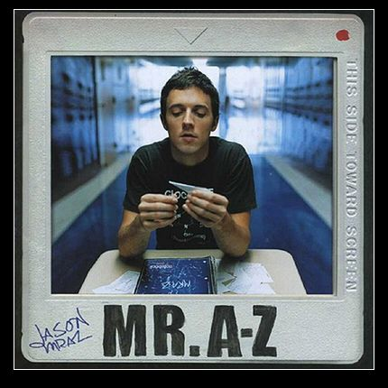
Mystery the moon
A hole in the sky
A supernatural nightlight
So full but often right
A pair of eyes a closin' one
A chosen child of golden sun
A marble dog that chases cars
To farthest reaches of the beach
and far beyond into the swimming sea of stars
A cosmic fish they love to kiss
They're giving birth to constellation
No riffs and oh no reservation
If they should fall you get a wish or dedication
May I suggest you get the best
For nothing less than you and i
Let's take a chance as this romance
is rising over before we lose the lighting
Oh bella bella please
Bella you beautiful luna
Oh bella do you do
You are an illuminated anchor
Of leads to infinite number
Crashing waves and breaking thunder
Tiding the evenflows of hunger
You're dancing naked there for me
You expose all memory
You make the most of boundary
You're the ghost of royalty imposing love
You are the queen and king combining everything
Into twining like a ring around the finger of a girl
i'm just a singer, you're the world
all i can bring ya
is the language of a lover
bella luna, my beautiful beautiful moon
how you swoon me like no other
may i suggest you get the best
of your wish may i insist
that no contest for little you or smaller i
a larger chance happened, all them they lie
on the rise, on the brink of our lives
bella please
bella you beautiful luna
oh bella do you do
bella luna, my beautiful beautiful moon
how you swoon me like no other, oh oh oh
坐在上海的出租车上，司机师傅很健谈，他说：“生活在上海，幸福感不高。”晚饭和朋友们讨论这个话题，有朋友说：“那就不出门呗，自己烧饭吃，没钱买房子可以租房子住。”我想幸福感取决于个人欲望的多寡，欲望多且难以实现时，自然没有幸福感可言。但是“知足常乐”，不是多数人能做到的，欲望就象爬楼梯，楼层越高爬得越辛苦。（如果你是富二代官二代星二代，你可以直接乘电梯上去了。）每一层的风景不同，你想看到更多风景，自然得不停地爬楼梯。
每次去上海，行走在上海的街道上，都有一种要被淹没的感觉。无形的快节奏，无形的生活压力，从西装革履到人字拖，从CBD的窗明几净到一间房的足疗店，放眼望去每个人都在这座城市中为了生存吸取需要的养分。也有不一样的街景，傍晚三五个老人悠闲地坐在巷弄里聊天，观望来来往往穿梭地人群，他们处于社会的边缘，“观望”或许意味着他们与这个社会还存有一丝联系。
据说上海郊区的房价全线上涨，市中心房价稳定，全市均价在CNY2.5万/平米，你信吗？从二线三线城市迁居上海，所有人的资产会缩水2/3？
看到怀孕的Apple大方地写下她和妈妈相处的感受，这无疑鼓舞了我。此前我认为有谁会在人前谈论自己与长辈相处的矛盾呢？然而渐渐发现，这样的矛盾还挺普遍。既然具有普遍现象，谈一谈又何妨？
*Apple：“我和我妈之间做事方式不一样，观念不一样，又由于这样的印象已经根深蒂固，以至于我的性格在她身上就会偏向极端的发展，所以她在家里的这段时间我没有明显的幸福感，我也希望小孩只有我和xpt来带就可以，累一点无所谓不过我觉得我可以handle。我想妈妈这个词在每个人心里都是温暖的，我也一样，但是真的和这个鲜活的个体相处后，就不再是心中的那个形象了。
......之前让她把住的房子换套新的，贷款我可以还，首付就把现在那套卖掉就行。结果看房子又纠结，就因为别人的一句话"房子南北不通不好"就不买，结果过了几天房子就涨了10w。很懊悔地来和我说"当时不买真是错过了"。但是问题是几个月后当我建议她买另一套的时候，她又做了同样的选择，几个月后又来和我说"错过了"，直到现在房价已经高到我已经没有能力帮她还贷款为止。......”*

抛开血缘关系，长辈们是一个一个的普通人，是人都会有性格缺陷，我认为这世界上没有完美性格的人存在。那么貌似完美的人只是比多数人有着超强的自控力。当成年后的我们面对我们的长辈时，他们已历经挫折与磨难，经过文革、改革开放时期的冲击，长辈们的身心均有不同程度的变化。
某段时期工作特别忙时，我惯于到家坐在沙发上沉默地放空几十分钟，沉默地饭后沉默地看不动脑的娱乐电视，沉默地遛狗沉默地散步，也可能熬个夜喝点小酒煲个电话粥什么的。有长辈在身边的话，这些项目会被压缩在10点前结束，且要伴随着无休止地唠叨，你必须有所回应和反应，你必须表现出他们期望地交流。前十年与后十年，他们唠叨的内容几乎惊人地一致，让人时刻处于生存、社交与情感的危机感中，时刻。
渐渐发现，那些对万事要求极致，患得患失，不安于现状又无奈，将自己性格心理问题抛向亲密关系的人，他们把自己装在密封的罐子里，他们纠结的人生都用来寻找一个出口。在这疲惫不堪地过程中，我们要能狠下心，过自己想要的生活。
早晨清冷得让人没有丝毫烦躁，秋季的温度，牵扯出既熟悉又无法捕捉的感觉，忽远忽近，瞬间就又回到麻木中来。秋季到来的太快，长袖衬衫还没来得及全部拿出来，便直接穿上了外套。夜晚散步双腿也会感到冷飕飕地，只有中午还热烈着。秋季每每到来，都让人莫名慌张，这一年又要过去了。


间隔一段时间集中去超市采购一次，关注到那些琳琅满目的香料，是做各种口味盖浇饭的好帮手。近来常常做盖浇饭，方便又省时。以及爱上了在台湾名品城买的手工面条，细如发丝，下锅30秒即熟，加上各式炸酱料理出各式口味的拌面，极具效率。


俺家狗狗断粮（狗粮）三天了，每天中午和晚上，它们会跟前跟后讨吃的。耐心地在厨房里等着我烫西兰花和胡萝卜，拌上一袋狗狗专用的牛肉粒，有时会加上一颗撵碎了的白煮蛋。它们吃得欢，在狗粮到达前或许这样的食物更美味？

上面这些照片是用TC-1+Fuji film x100拍摄，刚拿到相机那天，恰好问问在公司门口等我，我们俩坐在车上，她给相机上好卷，为测试机器去超市去菜场都带着它，用了一天半仓促拍完一卷。这是拍摄的第一张胶片，记录一下。

Shot by Chen wenwen
FUJI Klasse-W+FUJI Film
在网上搜了下FUJI Klasse-W，发现评测少，出片少。Klasse-W国内用的人不多吗？看了问问拍摄的景德镇胶片的效果，激动+兴奋，促使我向胶片领域迈进了一步。看那些胶片的照片，虽然有些只是简单的静物照，但那种沉着的色彩与层次感还是会感染到我。这是在Flickr上所有人用Klasse-W拍摄的照片，有些还蛮惊艳的。
@June,2011
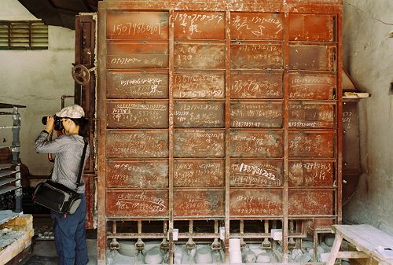
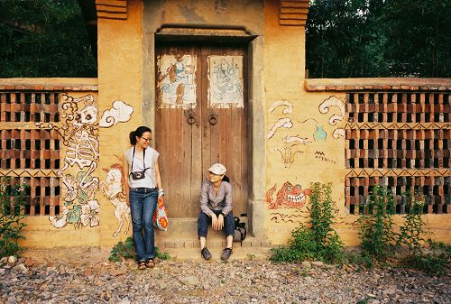
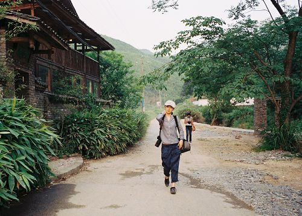
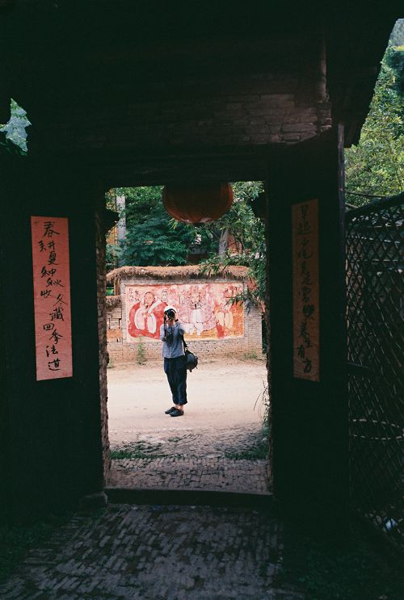
@Nov.,2010

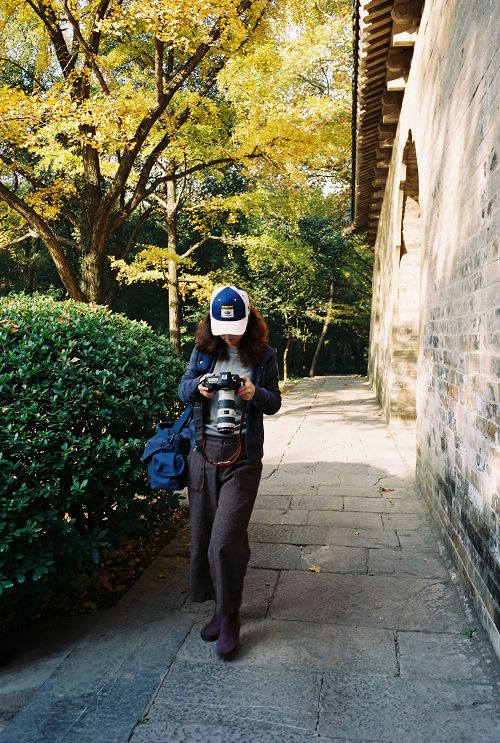
以下照片为CONTAX T2拍摄，她已出售这款相机。
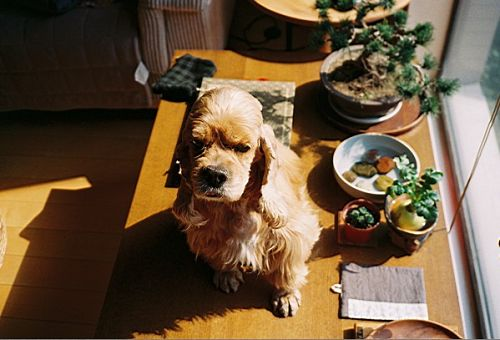

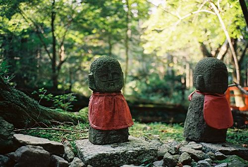

邻居家淘汰的迷你自行车，送给钟点工阿姨，她修理后给了我一把钥匙，车就放在走廊里。谁用都可以。
中午把土豆放在前面车篓，LUKE用绳子牵着，围着小区骑行。LUKE的劲真大，跑得比车速快，几次险些被它拽得失去平衡。我说：“LUKE慢点，慢点...”远远地被前来小区看房的朋友认出。一听是LUKE，才发现原来是我...晕...
话说带两条狗骑车外出，各种欢乐。
网上有这样一段文字：每天在小区里，看见一群群带孩子的年轻妈妈，觉得她们的眼神好荒芜。好多不到30岁就下岗了，专职带娃。一天之中，起床，做早餐，等老公出门上班，带娃下楼散散步，做午饭，午睡，出门买菜，回家做饭，等老公回家吃饭，带娃下楼散步，回家看电视，洗洗睡。
理智地分析，上述这段文字过于偏执，对生活体验有限。

事实上，上班族不过比全职主妇多了一份工作而已，你怎么知道人家全职主妇除了带孩子做饭之外，没有其他的追求和兴趣爱好？要知道，选择全职在家是需要能力的，尤其是独立的财力。而且人家有大把的时间去追求自己的兴趣所在，家庭生活是人生重要的组成部分。
上班族除了工作，同样要买菜做饭忙家务带孩子照顾老人，连看部电影都得占用睡眠时间。除非你还是单身，如果你已经拥有了家庭，且不靠“啃老”维持日常家庭生活的话，剩下还有多少时间去做自己喜欢的事？公司每年给你多少天年假？你的收入的百分之几用在交通、工作置装、无谓的社交与排解压力的浪费上？失去自我是必然，假设落下个身心健康问题，挣那点小钱有毛用？哦，你说为了理想而工作，刚工作的人谈谈理想还成，都工作十几年的人了，谈理想未免奢侈，咱这年纪都不好意思谈理想了。
如今的上班族还真没什么好得瑟的，多数人不过是将生命消耗在求生存这一无奈的过程中而已。如果兴趣爱好恰好与挣钱结合在一起，那才是人生一大幸事。不过那是属于极少数人的幸运。
没准儿家庭全职的人们还在嘲笑你们这些“即将变态，或正在变态，或已经变态”的上班族呢，你们有在享受生活，追求自己的兴趣所在吗？你们每天都在吃快餐，走疾步，消耗大量的能源在交通上，花大把的钞票去解决心理压力，你们过着趋炎附势、勾心斗角、假面人的日子，有什么好得意的？要不你也全职一把看看？你有那个能力吗？
这组胶片拍摄的古奇高室内设计，是香港导演“陈可辛在北京的工作室”。我家那把圈椅也是古奇高作品。他不仅设计制作家具，同时也是前途无量的室内设计师。古奇高设计的家具，已开展外地销售，线上预订网站：http://www.fnji.net/
设计师：古奇
摄影师：Autorun
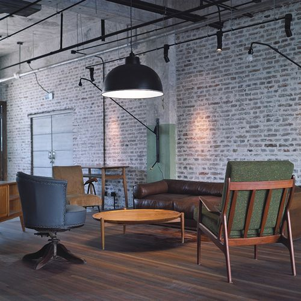
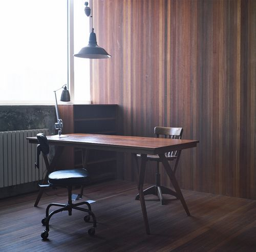
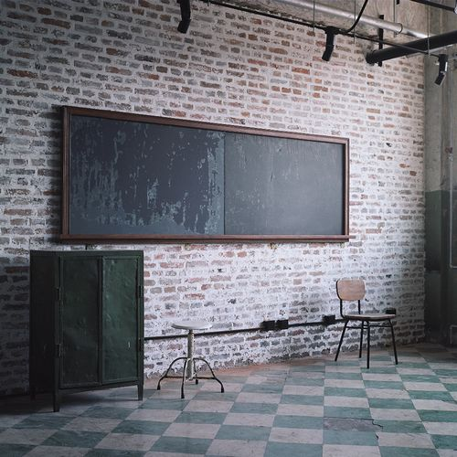
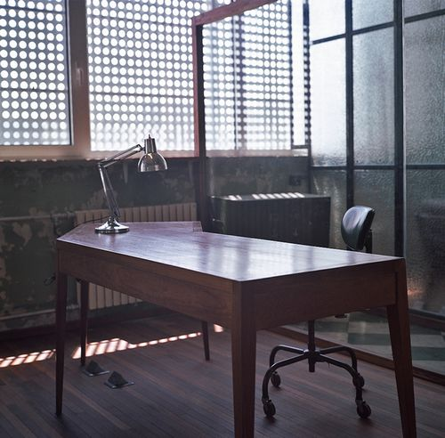
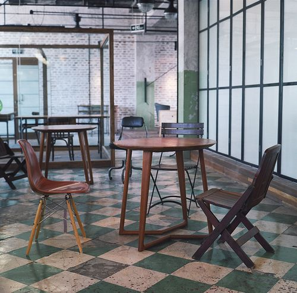
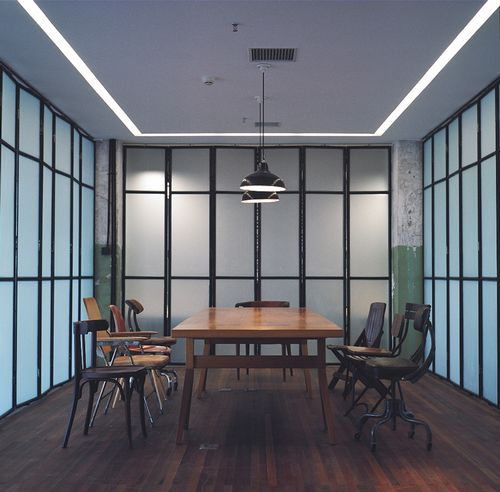

明天终于到星期四了，小周末。
晚饭后泡了壶太湖翠竹，吃水果，看《康熙来了》。
娱乐之后出门遛狗散步。
今天网购了三种棉布料和一台电动缝纫机，准备为狗狗们缝制可拆洗的窝里的垫套。之前缝一针一线手工缝制了两个垫套，挺耗时间。我妈妈有一台70年代老式脚踏缝纫机，可以进博物馆了，但她还在使用。我无法手脚并用的使用它，电动的也好，也能体验缝纫乐趣。